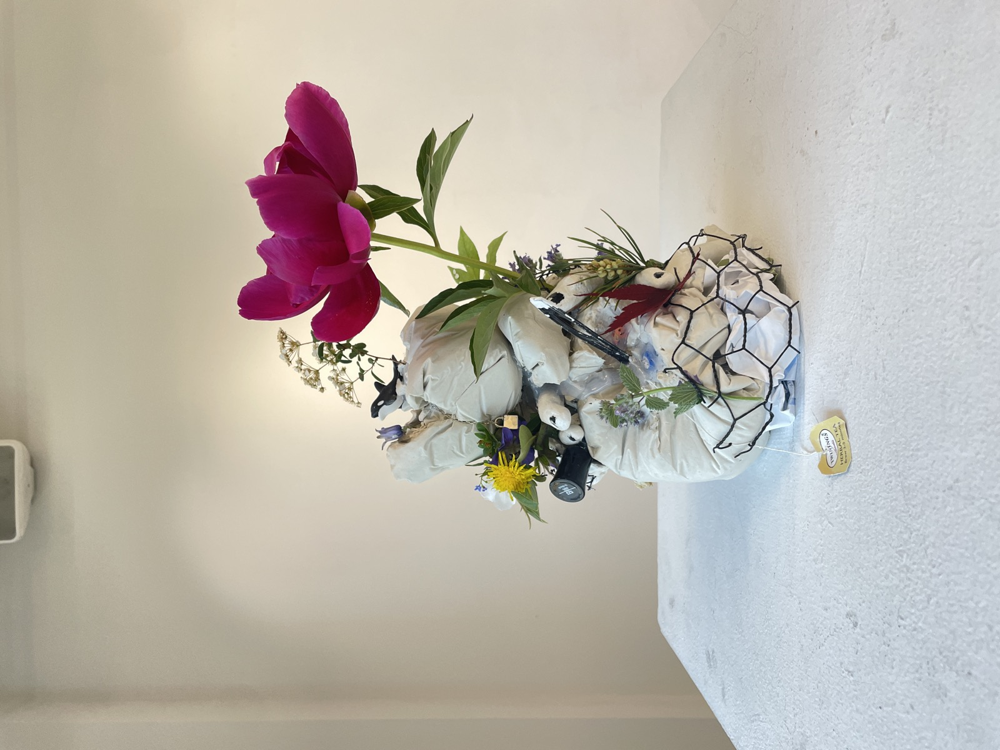
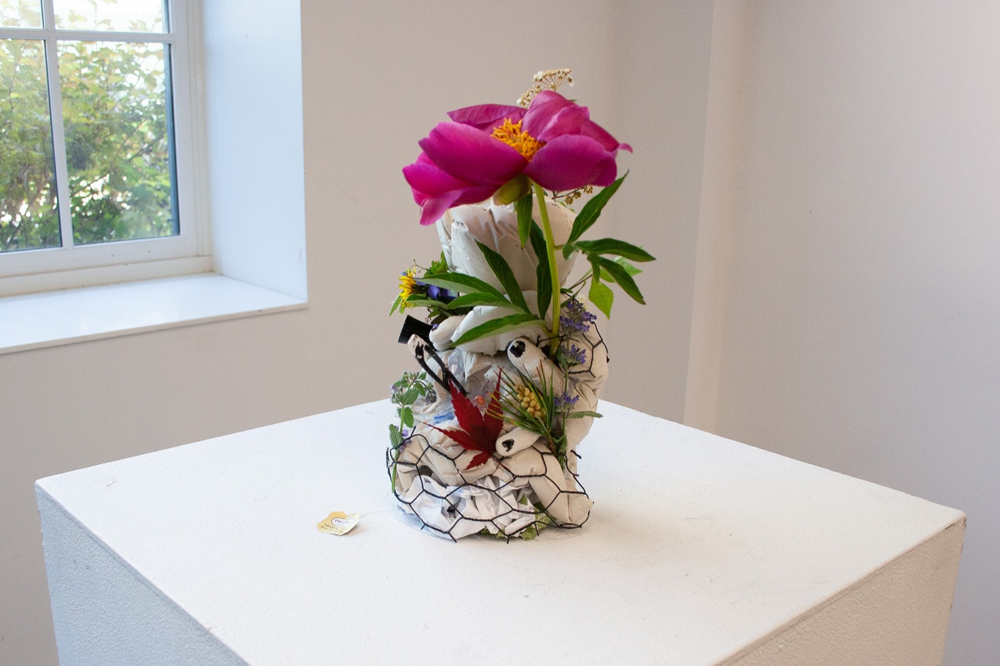
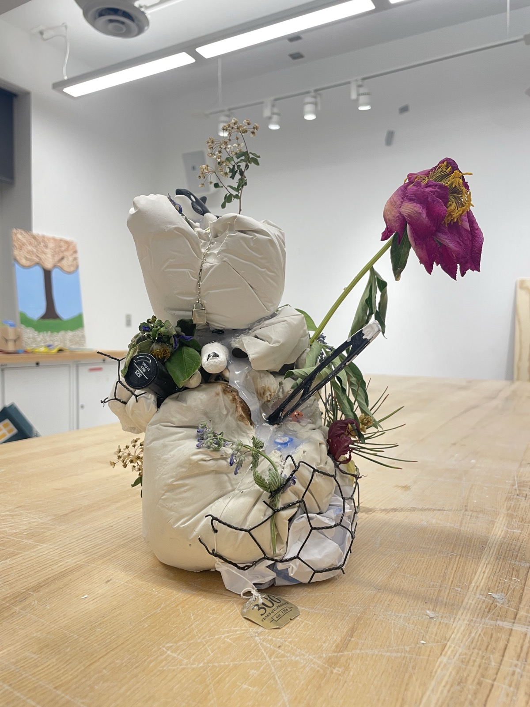
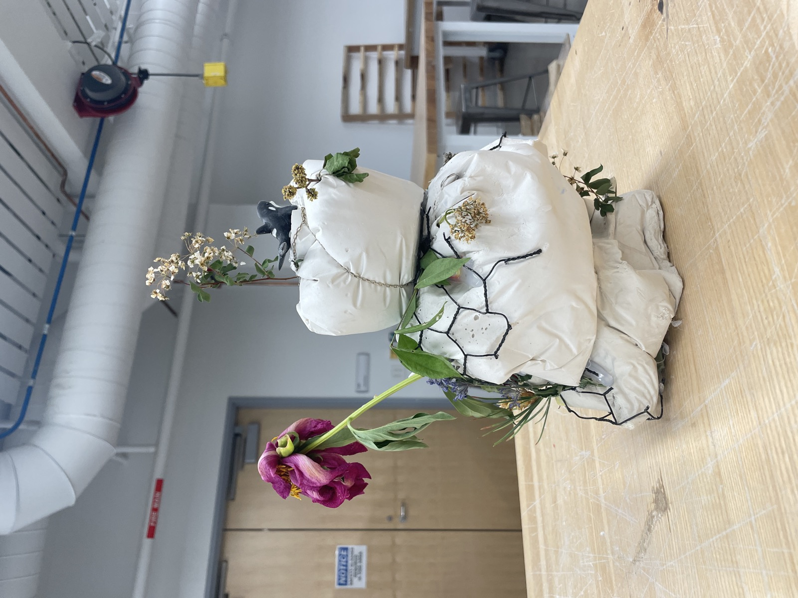

REPEAT REPEAT REPEAT REPEAT REPEAT REPEAT REPEAT REPEAT REPEAT REPEAT REPEAT REPEAT REPEAT REPEAT REPEAT REPEAT REPEAT REPEAT REPEAT REPEAT REPEAT REPEAT REPEAT REPEAT REPEAT REPEAT REPEAT REPEAT REPEAT REPEAT REPEAT REPEAT REPEAT REPEAT REPEAT REPEAT REPEAT REPEAT REPEAT REPEAT REPEAT REPEAT REPEAT REPEAT REPEAT REPEAT REPEAT REPEAT REPEAT REPEAT REPEAT REPEAT REPEAT REPEAT REPEAT REPEAT REPEAT REPEAT REPEAT REPEAT REPEAT REPEAT
part 1: silhouette

When given the choice to create something autobiographical, site-specific, or both, I decided on autobiographical. My process differs from project to project, but this time I started with ideas for the shape and form of the sculpture rather than with the meaning.
The first idea I had was sort of an origami bouquet situation with each flower symbolizing something personal, but I thought that was kind of boring. The second was to make a carton of plaster eggs, where each egg had a personal momento inside that can be revealed by smashing the egg. The last idea was less so a concrete idea but more of a vibe: bubbles.
At the time, I was really fascinated by bubble and blobs, both found in nature (e.g. sea foam) and manmade (e.g. plaster of paris). We had just used plaster of paris for a previous project, and I really loved the blob-ness of the medium. There was just something I found so beautiful and organic about blobs because the shape felt so simple yet lifelike, which I thought was the perfect medium for an autobiographical statue.
While researching and exploring plaster of paris as a sculptural medium, I found the work of Jeff Muhs, an American painter and sculptor. His ability to mould concrete to silhouettes and forms that seem contrary to the idea of concrete itself absolutely fascinated me, and it inspired me to do something similar with plaster.
part 2: autobiography
With the general silhouette/primary medium decided, the autobiographical aspect of the sculpture fell into place pretty naturally. As graduation was around the corner, I wanted to commemorate my four years at Northwestern University somehow, and this sculpture seemed like the perfect way to do so.
My relationship with my time at NU is complicated. Though I feel extremely lucky and grateful to have have the experience I've had, to have met the people I’ve met, there were also times where I struggled tremendously, even to a point where I didn’t know if I could make it out alive. Even now, post-graduation, I oscillate between “I wouldn’t change a single thing!” to “I have so many regrets!”
Regardless of my ever-changing sentiments about my college years, I am absolutely certain that those four years have been the most transformative period of my life thus far, each year pivotal in it its own way. So to honor each year and my undergrad career as a whole, I made 4 blobs by mixing and shaping plaster of paris in plastic baggies. I moulded each subsequent blob by holding the bag of wet plaster mix against the previous blob and other objects until the mixture set, so the blobs roughly fit together. Inside as well as between the blobs, I incorporated an assortment of items I scavenged from my apartment. Ranging from freshmen year class notes to a soda can I emptied hours before, these were items were meaningful to me and/or represented a specific time or moment during my college life.
- Diet Pepsi: in place of a Zero Ultra White Monster, my essential college drink
- Fun Dip: sweet reminder of my childhood
- Black nail polish: the only nail polish color I wore
- Plastic Easter egg: momento from a fun night with friends
- Instant coffee: I hate instant coffee but I drink a LOT of coffee
- Lock necklace: my favorite necklace at the time
- Tea bag: popular item to take from dining halls
- Cell storage tube: #biology
- Ring: really worn
- Prescription bottle: my meds
- Sugar packet: another dining hall momento
- Crumbled poster: leftover SYZ recruitment material from 2022
- Shrinky dink keychain: unofficial SYZ merch
- Nose ring: my septum piercing
- Orca eraser: symbol of Evanston, IL
- Dime: not a quarter
- Beads: selected beads from arts & craft kit
- Plastic spoon: loose backpack object
- Plaster fingers: fragments from a previous project
- Lined paper: notes on Japanese and organic chemistry
- Gudetama sticky note: mood
After hours of moulding and decorating, I ended up with something very autobiographical but lifeless and brutalist. Though there were definitely moments during college that were brutal, where I did feel lifeless, I didn't want to look back on these four years through such a narrow lens nor portray my college experience so negatively. Despite the entropy of it all, I’ve had countless happy moments with so many extraordinary people — those were the memories I wanted to emphasize the most.
To revitalize my sculpture, I biked around campus and gathered all sorts of leaves, flowers, and organic artifacts and arranged them within my plaster sculpture. And what I ended up with is what I believe to be the perfect representation of my time at NU: a messy conglomeration of...stuff?...but one where life and beauty prevails.


part 3: ..?..
Moulding plaster of paris is hard! Especially when you're impatient like me. In an ideal world, I would've waited for each blob to set completely before unmoulding, and sanded each one to be more smooth.
But things are rarely ideal, are they, in art and in life. You could work away to make the smoothest, prettiest blob, but end up with something completely different, something more ragged and irregular. Does that mean I failed, because I wasn't able to fully accomplish what I set out to do? Or did I succeed, because I created something different yet still beautiful that reflects my efforts and the realities of life (and gravity).
I'm not sure, not even sure if there's a right answer. The more I grow and the more I experience, the distinction between success and failure becomes less and less clear to me. I think it's a key part of human nature, the desire to define and explain everything. But, that's not always possible, and so we turn to beliefs and faith.
I'm not quite sure how I went from talking about my sculpture to such philosophical reflections. I guess what I'm trying to convey, both in this HTML file and to myself, is that I don't know if I am succeeding or failing in life, but that's okay. I believe in myself and in doing my best, and I have faith that will get me to where I want to be.
What a terrifying yet wonderful feeling.


The sculpture after a few days, where some parts remain the same and other parts wilt.
Moments come and go, and, try as we may, it's impossible to preserve those memories and feelings and the people we love in moments in time. But, life will always continue and leave it's traces. A marked life is one well lived.